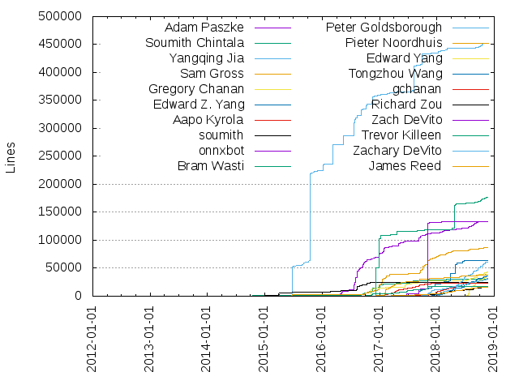
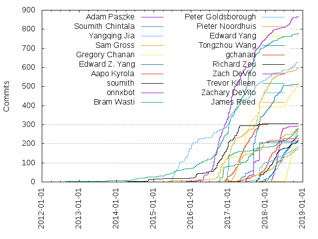

Authors
| Author | Commits (%) | + lines | - lines | First commit | Last commit | Age | Active days | # by commits |
|---|
| Adam Paszke | 865 (5.86%) | 133468 | 68389 | 2015-11-11 | 2018-11-05 | 1090 days, 5:45:52 | 352 | 1 |
| Soumith Chintala | 779 (5.28%) | 31073 | 21222 | 2012-08-23 | 2018-11-18 | 2277 days, 17:16:49 | 376 | 2 |
| Yangqing Jia | 626 (4.24%) | 451804 | 306343 | 2015-06-25 | 2018-10-31 | 1223 days, 23:30:44 | 304 | 3 |
| Sam Gross | 597 (4.05%) | 86783 | 65862 | 2015-05-20 | 2018-11-13 | 1273 days, 5:56:01 | 262 | 4 |
| Gregory Chanan | 519 (3.52%) | 42869 | 28489 | 2016-08-31 | 2018-11-16 | 807 days, 4:23:09 | 204 | 5 |
| Edward Z. Yang | 511 (3.46%) | 64324 | 61914 | 2017-04-18 | 2018-10-08 | 538 days, 2:53:36 | 209 | 6 |
| Aapo Kyrola | 306 (2.07%) | 22899 | 8830 | 2016-11-18 | 2017-11-30 | 376 days, 1:41:05 | 163 | 7 |
| soumith | 305 (2.07%) | 24920 | 8964 | 2014-04-13 | 2018-02-28 | 1416 days, 16:12:13 | 127 | 8 |
| onnxbot | 292 (1.98%) | 292 | 292 | 2018-02-23 | 2018-10-12 | 231 days, 7:14:52 | 99 | 9 |
| Bram Wasti | 283 (1.92%) | 176895 | 125246 | 2016-11-18 | 2018-11-15 | 726 days, 20:16:58 | 118 | 10 |
| Peter Goldsborough | 282 (1.91%) | 61439 | 36132 | 2017-12-01 | 2018-11-16 | 350 days, 0:58:12 | 160 | 11 |
| Pieter Noordhuis | 281 (1.90%) | 39593 | 14062 | 2016-11-21 | 2018-11-14 | 723 days, 1:13:01 | 158 | 12 |
| Edward Yang | 268 (1.82%) | 39022 | 47097 | 2017-04-26 | 2018-11-15 | 568 days, 7:49:26 | 88 | 13 |
| Tongzhou Wang | 243 (1.65%) | 35560 | 20152 | 2017-10-24 | 2018-11-16 | 387 days, 22:57:27 | 144 | 14 |
| gchanan | 226 (1.53%) | 22835 | 13311 | 2016-11-11 | 2018-06-26 | 591 days, 23:44:57 | 129 | 15 |
| Richard Zou | 218 (1.48%) | 16897 | 4489 | 2017-09-18 | 2018-11-14 | 421 days, 16:54:47 | 128 | 16 |
| Zach DeVito | 213 (1.44%) | 133347 | 137597 | 2017-06-13 | 2018-02-03 | 234 days, 8:38:55 | 73 | 17 |
| Trevor Killeen | 206 (1.40%) | 17208 | 19809 | 2016-09-26 | 2017-11-06 | 405 days, 21:23:46 | 77 | 18 |
| Zachary DeVito | 186 (1.26%) | 31371 | 17230 | 2017-06-02 | 2018-11-15 | 531 days, 3:26:54 | 116 | 19 |
| James Reed | 171 (1.16%) | 16477 | 4002 | 2017-03-08 | 2018-11-15 | 616 days, 11:24:08 | 115 | 20 |
These didn't make it to the top: Lu Fang, Junjie Bai, Ronan Collobert, Will Feng, Orion Reblitz-Richardson, Jerry Zhang, Dmytro Dzhulgakov, Yinghai Lu, Luke Yeager, Simon Layton, bddppq, Thomas Viehmann, Marat Dukhan, Alexander Sidorov, Clement Farabet, Kittipat Virochsiri, Teng Li, Xiaomeng Yang, Andrew Tulloch, Yiming Wu, koray kavukcuoglu, Ahmed Taei, peterjc123, Sebastian Messmer, ngimel, SsnL, Paul Jesse Hellemn, albanD, Janusz Marcinkiewicz, Andreas Köpf, Dominik Grewe, Ilia Cherniavskii, Fei Sun, Luca Antiga, Jongsoo Park, Francisco Massa, Alisson Gusatti Azzolini, Sylvain Jeaugey, Andrey Malevich, anderspapitto, Xianjie Chen, jokeren, Anders Papitto, Vishwak Srinivasan, Adam Lerer, Viswanath Sivakumar, Priya Goyal, Christian Sarofeen, Alykhan Tejani, li-roy, cpuhrsch, James Cross, David Riazati, Christian Puhrsch, Andrew Dye, Fritz Obermeyer, Wei Yang, Jesse Hellemn, Sergey Zagoruyko, Hao Lu, Lukasz Wesolowski, Roy Li, Boris Fomitchev, peter, nicholas-leonard, Qinqing Zheng, Jiyan Yang, Xiaolong Wang, Duc Ngo, Huazhong Ning, Elias Ellison, vishwakftw, Pavan Yalamanchili, Michael Suo, Wanchao Liang, Ben Zhang, Julien Cornebise, Andreas Fidjeland, Yury Zemlyanskiy, Martin Raison, Zeming Lin, Yan Shang, Nathan Luehr, Aaron Markham, Pooya Davoodi, Hugh Perkins, Ailing, Rui Guo, Natalia Gimelshein, Bor-Yiing Su, Artem Volkhin, iotamudelta, Leon Bottou, Filip Binkiewicz, Brandon Amos, Ailing Zhang, Tim Harley, Neeraj Pradhan, Hassan Eslami, Simeon Monov, Mingzhe Li, Kai Arulkumaran, Jeff Johnson, bwasti, Yan Zhu, Sebastian Meßmer, Owen Anderson, Mike Ruberry, Kutta Srinivasan, Alican Bozkurt, zrphercule, Zhicheng Yan, Tao Wu, Romain Cledat, Julien, yunjey, Kaiyu Shi, Dan Horgan, Xingdong Zuo, Xiaodong Wang, Wojciech Glogowski, Tongliang Liao, Matt Uyttendaele, Martin Schatz, Jerry Pan, Jacqueline Xu, Georg Ostrovski, mruberry, Thomas Dudziak, Syed Tousif Ahmed, Sasank Chilamkurthy, Peizhao Zhang, Mateusz Piotrowski, Marcin Elantkowski, Kevin Matzen, Jorghi12, Jeff Donahue, James Sun, Aarti Basant, xkszltl, Zhou Mo, Yori Zwols, Yanghan Wang, Wael Abdelghani, Thomas Köppe, Rudy Bunel, Lin Yang, Johannes M Dieterich, Gao, Xiang, Frank Jiang, sf-wind, avmgithub, Victor Gao, Nicholas Leonard, Mohammad Hossain, Jon Morton, Jim Meyering, Ivo Danihelka, Eric Cosatto, Dong Shi, Chonglin Sun, Ashish, 103yiran, 陈云, ztaylor, vfdev, kmul00, fsuzanomassa, Yi Cheng, Xue Feng, Vedanuj Goswami, Tzu-Wei Huang, Maxime Boucher, Jonathan Tompson, Jason Jeong, Hector Yuen, Guillaume Dumont, Gu, Jinghui, Geet Sethi, Eli Stevens, Du Phan, Di Yu, Deepak Gopinath, Ben, Ansha Yu, wuhuikx, ezineo, daquexian, Yedidya Feldblum, Xiang Gao, Ou Jin, Michael Carilli, Mathieu Baudet, Leonid Vlasenkov, Kevin Wilfong, Jon Crall, Jason Gauci, Janusz Kudelka, Igor Sugak, Honghao Wei, Freddie Mendoza, Ellie Wen, Du Tran, Dr. Kashif Rasul, Daya S Khudia, Bangsheng Tang, Alfredo Canziani, jekbradbury, Zhou Chang, Yongjik Kim, Xian Li, Wenyi Huang, Wei Wen, Tommy Yu, Summer Deng, Shihao Xu, Ross Girshick, Qichao Que, Nim Arora, Manoj Krishnan, Koan-Sin Tan, Keren Zhou, Kaiyu Yang, JerryShih, Jerry Ma, Hycis, Hao Shi, Hans Gaiser, Haixin Liu, HE, Tao, Edgar Riba, Dong Li, Dmitry Ulyanov, Davin Wang, Daniel Bermond, Cédric Deltheil, Christopher Hay, Chenguang Xi, Brian Vaughan, Bokai Cao, zou3519, rohithkrn, rluo, rguthrie3, lynic, llyfacebook, lazypanda1, andreh7, Your Name, Varun Agrawal, Szymon Piechowicz, Seth Hendrickson, Sean Naren, Samuel, Ronny, Robert Verkuil, Rachit Singh, Pablo Estevez, Misha Smelyanskiy, Minsuk (Brian) Kahng, Lynn, Lingyi Liu, Li Dong, Lei Chen, Krishna Vudata, Kevin Waugh, Kecheng Hao, Karan Dwivedi, Kaixhin, João Felipe Santos, Joel Marcey, Jinghui, Jie, Jay Mahadeokar, Ilija Radosavovic, Holger Kohr, Frederic Besse, François Garillot, Erik Brinkman, David Reiss, David Lai, Dan Zimmerman, Benoit Steiner, Arnaud Chauveur, Anton Vaneev, Anton Osokin, Anshul Verma, Angela Fan, Allan Jabri, Ahmed Aly, なるみ, yyetim, verhoek, theweiho, samehkhamis, pbialecki, liboyue, jgong5, jeremy, fehiepsi, ethanluoyc, chenyuntc, Zhishuai Zhang, Zhaoheng Ni, Zhao Tan, Yongqiang Wang, Xiao Yang, Wenlin Chen, Wei Zhang, Taehoon Lee, Svetoslav Kolev, Steven Strijakov, Skotch Vail, Shenxiu Liu, Sergio Gomez, Rasmus Diederichsen, Qing He, Po-Hsien Chu, Philipp Keller, Peter Yeh, Parth Raichura, Ozan Çağlayan, Norman Mu, Nitish Shirish Keskar, Nicolas Vasilache, Nicholas Léonard, Naman Jain, Mingfei Ma, Mikhail Korobov, Michael Antonov, Maxim Berman, Martin Simonovsky, Martin Drawitsch, Luke Alonso, Lucas Beyer, Lin Li, Liang Xiong, Kyle Fernandes, ne Jacobs, Kun Han, Kento NOZAWA, Joseph Spisak, Joost van Amersfoort, Joo-Kyung Kim, Jon Malmaud, Jiaming Liu, Jeff Rose, Isac Arnekvist, Ir1dXD, Ioannis Antonoglou, Huamin Li, Howard Su, Hong Xu, Henry Lu, Hardik, Geunsik Lim, Evan Klitzke, Emanuel Jöbstl, Eli Amesefe, Eider Moore, Do Huy Hoang, Dmitrii Podoprikhin, David Yamnitsky, David Pollack, David Brownell, Cliff Woolley, Chunli Fu, Cheng,Penghui, Brian Johnson, Badri Narayan Bhaskar, BTNC, Aron Barreira Bordin, Andrew Gallagher, Amy Zhang, Allen Ye, Alexander Matyasko, Adam Cécile, Aaron Jaech, yongjik, xhzhao, tvn, tomguluson92, sven, sunnieshang, stooloveu, root, rasbt, ptrblck, nkoumchatzky, nadavbh12, mlappelbaum, mdschatz, lichen, kevinbchen, jiakai, jcatana, j-wilson, houseroad, harrysummer, harouwu, greaber, diz_vara, cph, cdiep, cclauss, brett koonce, braincodercn, bhushan, bdfhjk, atkayu, andrew giessel, Zico Kolter, Zhiyong Dang, Zhanibek Datbayev, Yassir Solomah, Yang Yang, Xiuyan Ni, Willy Blandin, Will Frey, Wenhao Hu, Vsevolod Oparin, Valentin Haenel, Vadim Velikodniy, Tullie Murrell, Tristan Rice, Tilak Sharma, Tianshu Bao, Thiago Crepaldi, Tejas Khot, Taewook Oh, Sri Krishna, Simone Cirillo, Shuichi KITAGUCHI, Shaoliang Nie, Shagun Sodhani, Sergei Nikolaev, Scott Sievert, Sang-gil Lee, Ruotian(RT) Luo, Ruotian Luo, Runtian Zhou, Roger-luo, Robert Kirby, Rishi Raj Singh Jhelumi, Riddhiman Dasgupta, Ravindra Rathi, Quan Vuong, Pritam Damania, PraveerSINGH, Peng Yang, Pauline Luc, Pan He, Ozan Caglayan, Ofir Press, Nick Hynes, Myle Ott, Mingda Li, Min Li, Maxim Naumov, Max Katsev, Matthias Ochs, Matt Le, Matt Dawkins, Matan Appelbaum, Masaki Kozuki, Marvin Cao, Marko Vitez, Mark Neumann, Marcela Morales Quispe, Marc Ferradou, Long Jin, Lei Tian, Lara Haidar-Ahmad, Koray Kavukcuoglu, Kongsea, Kevin Zakka, Kairan Sun, Juan Miguel Pino, Jorg Doku, Jonathan R. Williford, Jonathan L Long, Jonathan J Hunt, Jonas Gehring, Jianyu Huang, Jian Zhang, Jeonghee Yi, Jenny Ramseyer, Jeff Smith, JackLangerman, IraKorshunova, Igor Milyakov, Ievgen Soboliev, Huan Gui, Heng Wang, Hardik Goel, Gökçen Eraslan, Guillaume Klein, Gu Wang, Giuseppe Ottaviano, Giovanni, Fisher Yu, Fabio Riccardi, Ethan Steinberg, Ethan Luo, Eric S. Yu, Edouard Delasalles, Douglas Chen, Doug Friedman, Dongsheng Fang, Dmitriy Serdyuk, Dirk Weissenborn, Deyu Fu, Devesh Agrawal, David Saxton, David Mascharka, Darren Garvey, Conrado Miranda, Clément Godard, Chunli, Choongwoo Han, Carlos Garcia Jurado Suarez, Calvin Lee, Bubble, Bruno Rosa, Brian W. Hart, Brett Koonce, Brennan Vincent, Benjamin Hou, Andrei Chtcherbatchenko, Amir Arsalan Soltani, Amartya Sanyal, Alexey Romanenko, Alban Desmaison, Aiden Nibali, Achal, Ace, zhtvk, zhoumingjun, zhiyong.dang, zhaopeng, yya007, yogi81, yangyanzhan, xuy111, wjcskqygj2015, vtomole, vmirly, uestclx, tpltnt, tomdz, tippisum, theFool, t-vi, sytrus-in-github, sundw2014, sunaaron, srib, sli, sethah, serega, sclarkson, samuela, rolczynski, richard, randxie, poh, ohlr, nkhuyu@gmail.com, ningqingqun, nick, nguyen-binh-minh, nehz, mseitzer, mratsim, mr.Shu, moskomule, mingzhe, mcarilli, martinarjovsky, marris, lyuwenyu, lizz, lberrada, laurent, lake4790k, kuttas, kittipatv, kazami, jvmancuso, josecabjim, joncrall, johnzou, jmp84, jjsjann123, jithunnair-amd, jhcross, jfan-uber, jario-jin, ivpopov, intel, inspire99, ilia-cher, idansc, iamqk, hongyi-zhang, hlu1, haracejacob, gngdb, glample, folz, felixgwu, egg-west, dzung-hoang, derek_kim, danielsimig, crcrpar, costin-eseanu, cjsg, carwin, caozhong, caoxudong, bstriner, bhushan23, alcinos, albanie, ahirner, adampolyak, aaronmarkham, Zhifeng Deng, Zhi-Qiang Zhou, Zhengping Zuo, Zheng Yan, Zhen Ling Tsai, Zhen He, Zhaoming Wu, Zachary Mirman, Yuxin Wu, Yury Gitman, Yunus Rahbar, Yunfeng Wang, Yugnaynehc, Yufei Wang, Yuan Xie, Yu-An Chen, Yu Feng, Yiran Mao, Ying Zhang, Yimeng Zhang, YifengHuang, Yifei Teng, Yi Wang, Yawara ISHIDA, Yavuz Yetim, Yarik Markov, Yannick Soom, Yann Zimmermann, Yang, Zhen, Yang Liu, Yang Cai, Yan Wang, Yan Facai (颜发才), Xinwei Geng, Xiaoyun Wu, Xiaoti Hu, Xiaoqiang Zheng, Xiangyu Wang, Xiangyan Sun, Xiang Wei, Xiang Li, Wojciech Jaśkowski, William Horton, William Falcon, Will Wilson, Wenfang Xu, Wendong Li, Weiyi Zheng, Wanchao, Vladislav Zavadskyy, Vladimir S. FONOV, Vladimir Chalyshev, Vlad Belous, Vincenzo Ferrari, Vince Jankovics, Vignesh Ramanathan, Victoria X Lin, Victor Quach, Ves Stoyanov, Verdi March, Vedaanta Agarwalla, Varun Jain, Uthsav Chitra, Uridah Sami Ahmed, Uladzislau Paulovich, Ujjwal, Tudor Bosman, Tudor Berariu, Tristan Zajonc, Tony Duan, Tony Beltramelli, Tong Xiao, Tom, Timothy Emerick, Tigran Hakobyan, Tiangao Gou, Thomas Riccardi, Thibault FEVRY, Tao He, Takayoshi Nishida, Taekin Kim, Sylvan Zheng, Sven-Hendrik Haase, Surag Nair, SunYeop Lee, Subhash Mullapudi, Stuart Golodetz, Stephen Merity, Stefan Schweter, Stefan Otte, Spandan Tiwari, Song Han, Simon Wang, Siddharth Mittal, Siddharth Goyal, Si Chen, Shuting Wang, Shuntaro Takahashi, Shubham Jain, Shrinidhi KL, Shiva, Shicong Zhao, Sherin Thomas, Sheng Zhang, Shashank Singh, Shannon Zhu, Setogit, Sergii Dymchenko, Sergey Kotsur, Sergey Kolesnikov, Sergei Lebedev, Sergei Belousov, Sepehr Sameni, Sen Li, Semion Sidorenko, Sebastian Raschka, Sean Snyder, Scott Yost, Scott Stevenson, Satish Nadathur, Santa Zhang, Sanjeev Satheesh, Sandeep Subramanian, Samuel Ainsworth, Sachin Padmanabhan, Ryuichi Yamamoto, Ryan Brigden, Ruxin Wang, Russ Ferriday, Rushabh Shah, Ruochen Liang, Rui Zhu, Roy Shi, Roy Fejgin, Roxie He, Ronny Restrepo, Rohan Varma, Roger Pack, Rodrigo Castro, Robert Koch, Robert Eng, Robert DiPietro, Robert (Bobby) Wagner, Robert, Rob Kunkle, Rio Hoshi, Rick Ratmansky, Richard Xue, Ricardo Barreira, Renbin Peng, Ran Xian, Ran Bi, Ralph Mao, Qinfan Wu, Qin Huang, Qian Hong, Pádraig Brady, Pushkar Tripathi, Praveen Palanisamy, Pradeep Dorairaj, Po-Yen Chou, Piotr Mitros, Pierre-Francois Laquerre, Philipp Lang, Philip Yang, Philip Pronin, Petr Lapukhov, Peter Ruch, Peter Jin, Pengyao Chen, PengBo, Pedro Porto Buarque de Gusmao, Paul Kulchenko, Pau Farré, Pat Mellon, PE Mazaré, Owen Yamauchi, Oleksandr "Alex" Zinenko, Oisin Mac Aodha, Nintorac, Ning Dong, Nimalan Mahendran, Nikita Shulga, Nikita Melentev, Nicolas Despres, Nicolas D. Jimenez, Nay Oo, Nathan Inkawhich, Naren Dasan, Naim Kabir, NC Cullen, Mohammad Husain, Mohammad Hossein Sekhavat, Mohamed Fawzy, Mo Zhou, Mitchell Wortsman, Mikhail Zolotukhin, Mike Vella, Mike Kelley, Mike Garmulewicz, Michael Shao, Michael Pound, Michael Houston, Michael Galkov, Michael Dietz, Micael Carvalho, Mevlana Gemici, Mehdi Drissi, Mayank Rana, Max Schwarz, Matthew Rocklin, Matthew Inkawhich, Matthew Chan, Matthew Brandyberry, Matt Dering, Matt, Massimo Bernava, Mary McBreen, Marvin CAO, Maruan, Martin Tutek, Mark Richardson, Marek Šuppa, Marco Zandonadi, Malek Doghman, Malcolm Reynolds, Makarand Tapaswi, Mahdi Nazemi, Madelaine Boyd, Maciej Kula, Maciej Bargiel, Ma, Mingfei, Ma Mingfei, MRuberry, LuoweiZhou, Lumin Zhou, Lukas Cavigelli, Luis Galeana, Low Kian Seong, Lorenzo Porzi, Liyuan Liu, Liang Shuailong, LiZhaoxing, Leon Masopust, Lei Zhang, Laura Gustafson, LaiyuanGong, LadyRick, L. Zhou, Kyle M. Tarplee, Kun Huang, Konstantin Semianov, Konstantin Lopuhin, Konpat, Kirtesh Patil, Kieran Milan, Kentaro Wada, Kean Finucane, Kazuma Hashimoto, Katya Gonina, Katrin Leinweber, Kato Tetsuro, Kashif Rasul, Karthik Prasad, Kam Leung, Kaiming He, Justus Schwabedal, Justin Johnson, Junior Rojas, Jun Luan, Julian Rosenblum, Joost van Doorn, Jong Wook Kim, Jonathan Weese, Jonathan Tremblay, Jon Walsh, John Pearson, John Chiotellis, John, Johan Gudmundsson, Joel Wong, Joe Peplowski, Joan Puigcerver, Jinhyun lewha0 Kim, Jingfei Du, Jin-Hwa Kim, Jimmy Jia, Jihun Choi, Jianlong Zhong, Jianfei Wang, Jeffrey Dunn, Jeff Petkau, Jean Senellart, Jean A. Senellart, Jat, Jason Park, Jason Kuen, Jason Juang, Jan Stria, Jan Schlüter, Jan Gaura, Jammy Zhou, James Geboski, James Bradbury, Jaivarsan, Jaemin Cho, Jacob Menick, Jack Rae, JT Bates, JP, Isaac Ge, Ilya Biryukov, Ikhwan Lee, Icyblade Dai, Iaroslav Shcherbatyi, Iacopo Poli, Hyungsuk Kang, Hungryof, Hung-Ju Chen, Huayu Li, Hong Li, Hoa Dinh, Hexus (Shihao Xu), Herry, Harsh Agrawal, Hannes Schulz, Hannes Badertscher, Hani Altwaijry, Guoxia Wang, Guo Tang, Guillaume Sautière, Guillaume Huard, Guan Pang, Grigori Fursin, Greg McGary, Giri Anantharaman, Geoffrey Roeder, Gavin, Gao Yingkai, Gabriel Bianconi, GBLin5566, François-Michel De Rainville, Frank Cash, Fedor Borisyuk, Facebook Github Bot, Evpok, Evgeny Kharitonov, Evgeniy Zheltonozhskiy, Evgeniy Shin, Eugene Vorontsov, Erik Zawadzki, Ehsan Azar, Egil Martinsson, Edoardo Conti, Edgar Andrés Margffoy Tuay, Dániel Simig, Durk Kingma, Du Bois Eloi, Dominik Schlösser, Domagoj Alagić, Dmitry Pleshkov, Dmitrii Marin, Dinesh Bolkensteyn, Dillon Laird, DigiDigi, Dhruv Mahajan, Dhanton, Devashish Tyagi, Denis Yarats, Dehua Cheng, Daya Khudia, David Truong, Danqing Liu, Daniil Pakhomov, Daniel Tse, Dan Zheng, Dan Nguyen, Curtis Huang, Costin Eseanu, Cosmo Stérin, Cory Lorenz, Cong Chen, Clinton Yeboah, CircleCI, Christoph Conrads, Christian S. Perone, Chris Hiszpanski, ChongyuIntel, Chintak Sheth, Chetter2, Chetan Khatri, Chao Zhang, Chao Li, Changmao Cheng, Changhan Wang, Chalise Grogan, Chad Whipkey, Catherine Dong, Carl Lemaire, CSLJXing, CNC, Byung-Gon Chun, Bryan Wu, Bryan Marcus McCann, Bruno Alexandre Rosa, Brooks, Brian Lan, Brian Hart, Brian Gesiak, Brendan Soffientini, Bram Ton, Brad Stocks, Bowen Bao, Bobby De Simone, Bo Xie, Bingjun Sun, Bhushan Sonawane, Benoit Rostykus, Benjamin Heinzerling, Benjamin Graham, BenFielding, Ben Graham, Bart van Merriënboer, Bart Olsthoorn, Barlas Oguz, Balint Cristian, Aziz Alto, Avani Nandini, Atul Kumar, Atabak Dehban, Ashwin Bharambe, Arya McCarthy, ArutyunovG, Arthur Crippa Búrigo, Arron Cao, ArmenAg, Armen, Arkadiusz Nowaczyński, Anton, Anthony Miller, Anshul Jain (B*8), Anna Petrovicheva, Anmol Kalia, Ankit Vani, Anirban Roychowdhury, Andy Chen, Andrzej Sołtysik, Andrii Grynenko, Andrew Robbins, Andrew Drozdov, Andrei Maximov, Anatoly Rosencrantz, Anastasius, Amitesh Arora, Alvin Chua, Alexis David Jacq, AlexanderRadionov, Alexander Miller, Alexander Mazukabzov, Alex Şuhan, Alex Sergeev, Alex Ford, Alekh Karkada Ashok, Akshay Chalana, Ajinkya Kolhe, Aidan Cully, Ahti Kalervo, Ahmed S. Taei, Adrian Punga, Adria Puigdomenech, Aditya Kumar, Adam McCarthy, Adam J. Stewart, Adam Henryk Paszke, Adam Fisch, Achal Dave, Abhishek Kadian, Aaron Schumacher, Aalekh Jain, 0phoff
Only top 20 authors shown
Only top 20 authors shown
| Month | Author | Commits (%) | Next top 5 | Number of authors |
|---|
| 2018-11 | Peter Goldsborough | 28 (6.70% of 418) | Edward Yang, Jerry Zhang, Jongsoo Park, Teng Li, Pieter Noordhuis | 112 |
| 2018-10 | Edward Yang | 46 (6.69% of 688) | Peter Goldsborough, Jerry Zhang, Gregory Chanan, Bram Wasti, Will Feng | 158 |
| 2018-09 | Edward Yang | 84 (14.31% of 587) | Peter Goldsborough, Tongzhou Wang, Adam Paszke, Gregory Chanan, Sebastian Messmer | 125 |
| 2018-08 | Edward Yang | 74 (12.98% of 570) | Gregory Chanan, Tongzhou Wang, Peter Goldsborough, Adam Paszke, Sebastian Messmer | 143 |
| 2018-07 | Edward Yang | 36 (8.04% of 448) | Gregory Chanan, Junjie Bai, Peter Goldsborough, Tongzhou Wang, Lu Fang | 138 |
| 2018-06 | onnxbot | 44 (8.51% of 517) | Peter Goldsborough, Tongzhou Wang, Edward Z. Yang, gchanan, Will Feng | 99 |
| 2018-05 | onnxbot | 100 (19.61% of 510) | bddppq, Peter Goldsborough, Paul Jesse Hellemn, Edward Z. Yang, Yinghai Lu | 99 |
| 2018-04 | onnxbot | 79 (14.96% of 528) | Tongzhou Wang, Richard Zou, gchanan, Peter Goldsborough, Paul Jesse Hellemn | 103 |
| 2018-03 | onnxbot | 49 (7.62% of 643) | Edward Z. Yang, Richard Zou, Tongzhou Wang, Dmytro Dzhulgakov, Peter Goldsborough | 125 |
| 2018-02 | gchanan | 32 (7.75% of 413) | Sam Gross, Richard Zou, Tongzhou Wang, Orion Reblitz-Richardson, Peter Goldsborough | 103 |
| 2018-01 | gchanan | 42 (9.91% of 424) | Sam Gross, Edward Z. Yang, Adam Paszke, Richard Zou, Yangqing Jia | 109 |
| 2017-12 | Sam Gross | 38 (11.34% of 335) | Pieter Noordhuis, Zachary DeVito, gchanan, Edward Z. Yang, James Reed | 79 |
| 2017-11 | Sam Gross | 37 (7.91% of 468) | Edward Z. Yang, Adam Paszke, Richard Zou, Soumith Chintala, gchanan | 111 |
| 2017-10 | Sam Gross | 88 (15.17% of 580) | Edward Z. Yang, SsnL, Gregory Chanan, Lu Fang, Richard Zou | 115 |
| 2017-09 | Edward Z. Yang | 74 (12.87% of 575) | Soumith Chintala, Adam Paszke, Sam Gross, Yangqing Jia, Gregory Chanan | 109 |
| 2017-08 | Edward Z. Yang | 85 (13.78% of 617) | Zach DeVito, Soumith Chintala, Gregory Chanan, Yangqing Jia, Aapo Kyrola | 124 |
| 2017-07 | Soumith Chintala | 83 (13.70% of 606) | Zach DeVito, Gregory Chanan, Trevor Killeen, Edward Z. Yang, Adam Paszke | 104 |
| 2017-06 | Gregory Chanan | 66 (10.51% of 628) | Zachary DeVito, Zach DeVito, Soumith Chintala, Edward Z. Yang, Luke Yeager | 111 |
| 2017-05 | Gregory Chanan | 53 (11.02% of 481) | Aapo Kyrola, Adam Paszke, Pieter Noordhuis, Soumith Chintala, Edward Z. Yang | 112 |
| 2017-04 | Aapo Kyrola | 49 (9.70% of 505) | Soumith Chintala, soumith, Pieter Noordhuis, Adam Paszke, Yiming Wu | 113 |
| 2017-03 | Pieter Noordhuis | 46 (8.68% of 530) | Yangqing Jia, Adam Paszke, soumith, Aapo Kyrola, Soumith Chintala | 123 |
| 2017-02 | Adam Paszke | 46 (11.41% of 403) | Sam Gross, Soumith Chintala, Pieter Noordhuis, Aapo Kyrola, Yangqing Jia | 97 |
| 2017-01 | Adam Paszke | 75 (14.79% of 507) | Bram Wasti, Soumith Chintala, Yangqing Jia, Sam Gross, soumith | 74 |
| 2016-12 | Bram Wasti | 78 (17.37% of 449) | Adam Paszke, soumith, Soumith Chintala, Simon Layton, Sam Gross | 52 |
| 2016-11 | Adam Paszke | 57 (17.98% of 317) | Trevor Killeen, Gregory Chanan, Soumith Chintala, soumith, Sam Gross | 48 |
| 2016-10 | Gregory Chanan | 66 (25.29% of 261) | Adam Paszke, Sam Gross, Soumith Chintala, soumith, Trevor Killeen | 18 |
| 2016-09 | Adam Paszke | 72 (33.96% of 212) | soumith, Soumith Chintala, Sam Gross, Trevor Killeen, Yangqing Jia | 16 |
| 2016-08 | Adam Paszke | 73 (48.34% of 151) | Soumith Chintala, soumith, Yangqing Jia, kmul00, Sam Gross | 13 |
| 2016-07 | Adam Paszke | 14 (29.79% of 47) | Yangqing Jia, Soumith Chintala, Sylvain Jeaugey, Sam Gross, Pauline Luc | 12 |
| 2016-06 | Adam Paszke | 19 (28.36% of 67) | Sylvain Jeaugey, Soumith Chintala, soumith, Jonathan Tompson, Sergey Zagoruyko | 14 |
| 2016-05 | Adam Paszke | 24 (48.98% of 49) | Soumith Chintala, Yangqing Jia, fsuzanomassa, Eric Cosatto, Francisco Massa | 13 |
| 2016-04 | Soumith Chintala | 10 (20.83% of 48) | Adam Paszke, soumith, Kaiyu Yang, Boris Fomitchev, Thomas Köppe | 18 |
| 2016-03 | Yangqing Jia | 21 (28.77% of 73) | Boris Fomitchev, Soumith Chintala, Zeming Lin, liboyue, Adam Paszke | 23 |
| 2016-02 | soumith | 21 (24.14% of 87) | Soumith Chintala, Andreas Köpf, Thomas Köppe, Francisco Massa, Frederic Besse | 22 |
| 2016-01 | Andreas Köpf | 30 (37.50% of 80) | Yangqing Jia, Francisco Massa, Nathan Luehr, Hugh Perkins, Soumith Chintala | 13 |
| 2015-12 | Yangqing Jia | 51 (61.45% of 83) | Andreas Köpf, Nathan Luehr, Luke Yeager, soumith, Boris Fomitchev | 13 |
| 2015-11 | Yangqing Jia | 17 (53.12% of 32) | Yori Zwols, Soumith Chintala, Nathan Luehr, Adam Paszke, Marko Vitez | 11 |
| 2015-10 | Yangqing Jia | 16 (41.03% of 39) | Soumith Chintala, Dominik Grewe, Hugh Perkins, Allan Jabri, Jeff Johnson | 10 |
| 2015-09 | Yangqing Jia | 33 (70.21% of 47) | Soumith Chintala, Dominik Grewe, j-wilson, Adam Lerer, Owen Yamauchi | 7 |
| 2015-08 | Yangqing Jia | 17 (48.57% of 35) | Adam Lerer, Dominik Grewe, Soumith Chintala, koray kavukcuoglu, Yori Zwols | 8 |
| 2015-07 | Yangqing Jia | 48 (54.55% of 88) | Soumith Chintala, Jeff Donahue, Dominik Grewe, samehkhamis, Adam Lerer | 14 |
| 2015-06 | Yangqing Jia | 7 (26.92% of 26) | Sam Gross, Soumith Chintala, Dominik Grewe, Jonathan L Long, Sergio Gomez | 10 |
| 2015-05 | ztaylor | 7 (24.14% of 29) | Dominik Grewe, Soumith Chintala, Sam Gross, Adam Lerer, Yori Zwols | 10 |
| 2015-04 | Soumith Chintala | 8 (30.77% of 26) | Ronan Collobert, Adam Lerer, Tim Harley, Dominik Grewe, soumith | 8 |
| 2015-03 | Georg Ostrovski | 2 (33.33% of 6) | Dominik Grewe, soumith, Xiangyan Sun | 4 |
| 2015-02 | Dominik Grewe | 4 (50.00% of 8) | Soumith Chintala, Yori Zwols, Georg Ostrovski | 4 |
| 2015-01 | Dominik Grewe | 8 (42.11% of 19) | Georg Ostrovski, Clement Farabet, Soumith Chintala, Santa Zhang, Jonathan J Hunt | 6 |
| 2014-12 | soumith | 2 (40.00% of 5) | Soumith Chintala, Georg Ostrovski | 3 |
| 2014-11 | soumith | 11 (61.11% of 18) | Dominik Grewe, nicholas-leonard, Ronan Collobert, Clement Farabet | 5 |
| 2014-10 | Soumith Chintala | 4 (30.77% of 13) | Jonathan Tompson, Dominik Grewe, nicholas-leonard, Jonathan J Hunt, Georg Ostrovski | 6 |
| 2014-09 | Dominik Grewe | 2 (50.00% of 4) | Soumith Chintala, Sergey Zagoruyko | 3 |
| 2014-08 | Soumith Chintala | 2 (66.67% of 3) | Dominik Grewe | 2 |
| 2014-07 | nicholas-leonard | 7 (63.64% of 11) | Soumith Chintala, Tudor Bosman | 3 |
| 2014-06 | nicholas-leonard | 22 (59.46% of 37) | Soumith Chintala, Hycis, Ioannis Antonoglou, Tim Harley | 5 |
| 2014-05 | koray kavukcuoglu | 1 (33.33% of 3) | Soumith Chintala, Ivo Danihelka | 3 |
| 2014-04 | Ronan Collobert | 5 (41.67% of 12) | soumith, Soumith Chintala, koray kavukcuoglu, Tim Harley, Clement Farabet | 6 |
| 2014-03 | Tim Harley | 6 (33.33% of 18) | Nicholas Leonard, Ronan Collobert, Andrew Tulloch | 4 |
| 2014-02 | Ronan Collobert | 9 (60.00% of 15) | Tim Harley, koray kavukcuoglu | 3 |
| 2014-01 | Sergio Gomez | 1 (100.00% of 1) | | 1 |
| 2013-12 | koray kavukcuoglu | 3 (100.00% of 3) | | 1 |
| 2013-11 | Leon Bottou | 5 (83.33% of 6) | Julien Cornebise | 2 |
| 2013-10 | Julien Cornebise | 20 (38.46% of 52) | Ronan Collobert, Dan Horgan, Clement Farabet, Soumith Chintala | 5 |
| 2013-09 | koray kavukcuoglu | 1 (33.33% of 3) | Soumith Chintala, Ronan Collobert | 3 |
| 2013-08 | Leon Bottou | 4 (50.00% of 8) | Clement Farabet | 2 |
| 2013-07 | Clement Farabet | 12 (66.67% of 18) | koray kavukcuoglu | 2 |
| 2013-06 | Clement Farabet | 8 (57.14% of 14) | Andreas Fidjeland, Leon Bottou | 3 |
| 2013-05 | Andreas Fidjeland | 20 (100.00% of 20) | | 1 |
| 2013-04 | koray kavukcuoglu | 7 (50.00% of 14) | Leon Bottou | 2 |
| 2013-03 | Ivo Danihelka | 2 (40.00% of 5) | Clement Farabet, koray kavukcuoglu | 3 |
| 2013-02 | koray kavukcuoglu | 6 (50.00% of 12) | Ronan Collobert, Clement Farabet | 3 |
| 2013-01 | koray kavukcuoglu | 2 (40.00% of 5) | Julien Cornebise, Ivo Danihelka | 3 |
| 2012-12 | Julien | 12 (54.55% of 22) | koray kavukcuoglu, Julien Cornebise, Ronan Collobert, Jeff Rose | 5 |
| 2012-11 | Ivo Danihelka | 2 (66.67% of 3) | Julien | 2 |
| 2012-10 | Clement Farabet | 4 (44.44% of 9) | Ronan Collobert, Ivo Danihelka, Andreas Fidjeland | 4 |
| 2012-09 | Clement Farabet | 13 (50.00% of 26) | Ronan Collobert, Jeff Rose, koray kavukcuoglu, JT Bates | 5 |
| 2012-08 | Ronan Collobert | 17 (80.95% of 21) | Soumith Chintala, Clement Farabet | 3 |
| 2012-07 | Ronan Collobert | 2 (40.00% of 5) | Clement Farabet, Ivo Danihelka | 3 |
| 2012-06 | Ronan Collobert | 5 (100.00% of 5) | | 1 |
| 2012-05 | Ronan Collobert | 6 (54.55% of 11) | koray kavukcuoglu | 2 |
| 2012-04 | Ronan Collobert | 3 (42.86% of 7) | Arnaud Chauveur, Pierre-Francois Laquerre, Clement Farabet | 4 |
| 2012-03 | Ronan Collobert | 20 (74.07% of 27) | Clement Farabet, koray kavukcuoglu, Arnaud Chauveur | 4 |
| 2012-02 | Ronan Collobert | 24 (43.64% of 55) | koray kavukcuoglu, Clement Farabet, Koray Kavukcuoglu | 4 |
| 2012-01 | Ronan Collobert | 6 (85.71% of 7) | Clement Farabet | 2 |
| Year | Author | Commits (%) | Next top 5 | Number of authors |
|---|
| 2018 | onnxbot | 292 (5.08% of 5746) | Peter Goldsborough, Edward Yang, Tongzhou Wang, Richard Zou, gchanan | 606 |
| 2017 | Soumith Chintala | 432 (6.93% of 6235) | Adam Paszke, Edward Z. Yang, Sam Gross, Aapo Kyrola, Gregory Chanan | 559 |
| 2016 | Adam Paszke | 371 (20.15% of 1841) | Soumith Chintala, soumith, Sam Gross, Gregory Chanan, Yangqing Jia | 123 |
| 2015 | Yangqing Jia | 189 (43.15% of 438) | Soumith Chintala, Dominik Grewe, Adam Lerer, Andreas Köpf, Jeff Donahue | 51 |
| 2014 | nicholas-leonard | 31 (22.14% of 140) | Soumith Chintala, Ronan Collobert, soumith, Tim Harley, Dominik Grewe | 19 |
| 2013 | Clement Farabet | 33 (20.62% of 160) | koray kavukcuoglu, Andreas Fidjeland, Julien Cornebise, Ronan Collobert, Leon Bottou | 9 |
| 2012 | Ronan Collobert | 96 (48.48% of 198) | Clement Farabet, koray kavukcuoglu, Julien, Ivo Danihelka, Arnaud Chauveur | 13 |
| Domains | Total (%) |
|---|
| fb.com | 6358 (43.08%) |
|---|
| gmail.com | 5037 (34.13%) |
|---|
| users.noreply.github.com | 989 (6.70%) |
|---|
| nvidia.com | 255 (1.73%) |
|---|
| mit.edu | 220 (1.49%) |
|---|
| in.tum.de | 176 (1.19%) |
|---|
| collobert.com | 140 (0.95%) |
|---|
| goldsborough.me | 120 (0.81%) |
|---|
| google.com | 101 (0.68%) |
|---|
| 163.com | 89 (0.60%) |
|---|